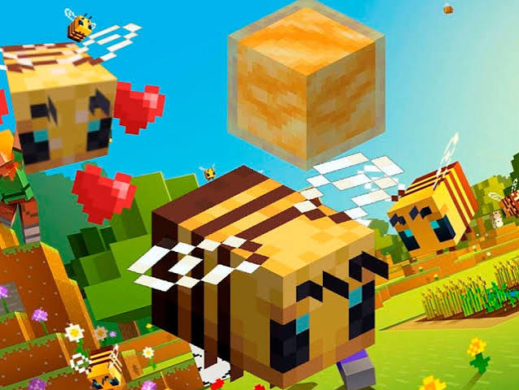
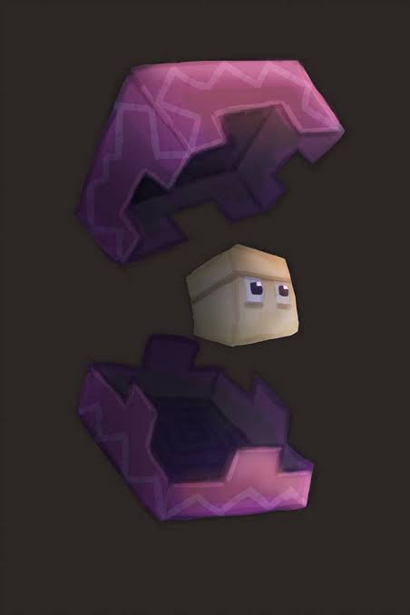
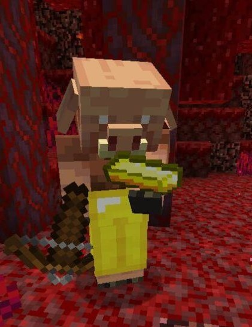

- Cuando una abeja con polen vuela por encima de un cultivo, esta tiene una probabilidad de polinizarlo, haciendo que este crezca un estado de crecimiento similar a como sucedería utilizando polvo de hueso

Si un Shulker es golpeado por un proyectil de Shulker, ya sea suyo o de otro Shulker, este tiene una probabilidad de generar un nuevo Shulker, siendo que el Shulker original tras el impacto se teletransportará a otro bloque, pero un Shulker nuevo aparecerá en el mismo bloque donde estaba el original antes del impacto.

Cuando uno o un grupo de Piglins logra cazar exitosamente a un Hoglin, estos tienen una probabilidad de celebrarlo con un "baile de la victoria" que consiste de agitar la cabeza y levantar los brazos formando una T.
